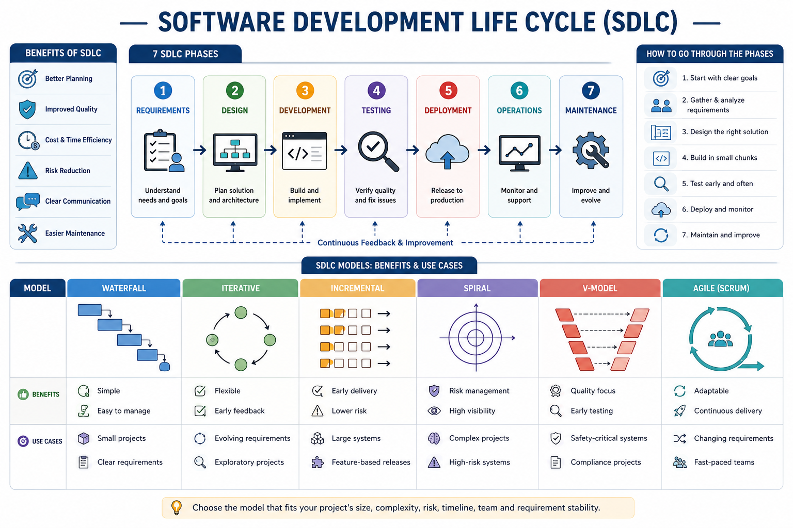

SDLC Benefits
The Software Development Life Cycle (SDLC) offers several benefits to software development projects:
- Improved Quality: By following a structured approach, SDLC helps ensure that the software meets the required standards and specifications.
- Enhanced Productivity: SDLC provides a clear framework for managing the development process, which can lead to increased productivity and efficiency.
- Better Project Management: The SDLC phases help in planning, organizing, and controlling the development process, making it easier to manage projects effectively.
- Reduced Risks: By identifying potential issues early in the development process, SDLC helps mitigate risks and ensures a more successful outcome.
- Improved Communication: The structured approach of SDLC facilitates better communication among team members and stakeholders.
Overall, the SDLC provides a systematic approach to software development that can lead to higher quality products, improved efficiency, and better project outcomes.

Real-World Uses:
Different organizations may choose different SDLC models depending on how much risk, testing, documentation, and flexibility their software projects require.
NASA
NASA projects require extremely careful testing and verification. The V-Model benefits them because each development stage has a matching testing stage, helping reduce errors in high-risk systems.
Scripps Clinic
Healthcare systems often need clear requirements, documentation, and approval before release. Waterfall helps by keeping the process organized and making sure each phase is completed before moving forward.
JPMorgan Chase
Financial institutions deal with security risks, customer data, and complex systems. The Spiral Model benefits them because it focuses on risk analysis during each cycle of development.
Amazon
Amazon can add features to its shopping platform or AWS services in smaller parts instead of releasing everything at once. The Incremental Model benefits them because users can receive useful updates while the system continues to improve over time.